Strange Attractors
A strange attractor is a set of points produced from a dynamic system which form a geometric structure with non-integer, or fractal dimension and other fractal characteristics such as self similarity. Basically dynamic systems are processes that move or change over time. Some examples of dynamic systems are a swinging pendulum, the Lorenz attractor, and the Belousov-Zhabotinsky cellular automata.
Dynamical systems are usual described by a series of equations for the change in position over time. The results of one calculation can serve as input in the next. That is the set of resulting points or image is produced by a feedback loop. The results are described as deterministic since they are dependent on initial conditions. When the results are sensitive to small changes in the initial conditions they are considered to display chaotic behavior. Chaotic behavior is also commonly referred to as the butterfly effect, which was original described by Edward Lorenz referring figuratively to a butterfly's movement in one continent eventually affecting the weather in another. When a dynamical system displays chaotic behavior the resulting set of points are described as an attractor. And when the attractor displays fractal like characteristics it is considered a strange attractor.
Let's move on to a simple example. Consider the following equations know as the Hénon map. The Hénon map has been studied as an example of chaotic behavior and appears on many other sites on attractors so I'll use it too.
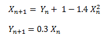
Start off by plugging some random initial value for X0 and Y0 into these equations to find X1 and Y1. Plot the results X1 and Y1 as a black pixel in the Cartesian plane on a white background. Repeat the calculation with X1 and Y1 as input and plot the output again as a black pixel. If you repeat the process over and over again for a few hundred cycles you will produce an image similar to that below.
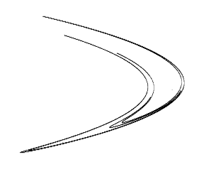
An infinite number of attractors can be described by the generalized 2nd order 2 dimensional quadratic map:
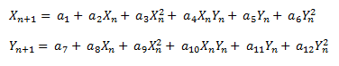
Where each set of coefficients a1 through a12 can potentially result in a different attractor. The Henon map above has values of a1:1, a3:-1.4, a5: 1, a8:0.3 and all the other coefficients set to zero. This map is considered 2nd order because the highest exponent is to the 2nd power.
Another specific example of this map is given by the following equation.
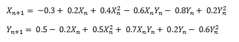
When this map is iterated over the following image results.
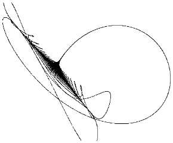
Technically the image will vary slightly with the initial values of X0,Y0, but the resulting points will eventually fall within the same pattern as observed in the image. As the iterations continue the points are “attracted” to those that make up the attractor.
Since we have 2 dimensions we are coloring the points black if they are hit. But we can also use a 3D map and use the 3rd dimension to indicate color. That is the z value can be mapped to a color index.
The general 2nd order 3D map is:
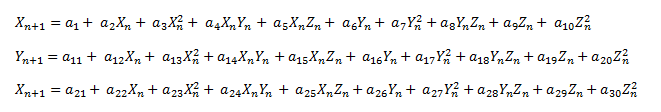
A specific example is:
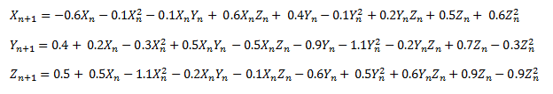
And the resulting image colored using the z dimension is:

An interesting characteristic of attractors and chaotic behavior is that the next point does not usually come out next to the last. For example if you were plotting the points of a linear equation such as line y = mx + b with increasing values of x, you can predict where the next value of y will be, close to the last last. However with attractors you are not choosing the sequence of x values but they are provided from the output of the last iteration. If you watch the image as its generated point by point, the points seem to pop up all over the place at first. The following series of images illustrates this by showing the same attractor with 100, 1,000 and 50,000 iterations.
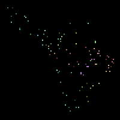
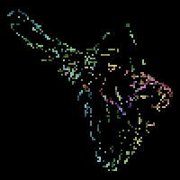
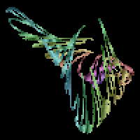
Not all values for the coefficients in the above equations will produce attractors. Usually when trying to find attractors a computer program generates sets of random coefficients and then tests them to see if they appear to produce an attractor. The standard way to determine if the resulting set of points define an attractor is to calculate the Lyapunov exponent.
If a solution is chaotic the Lyapunov exponent will be positive. The Lyapunov exponent is approximately the exponent to the power of 2 that the distance between two close points will differ in the next iteration. If the difference doubles by 2 the Lyapunov exponent is 1. If Lyapunov exponent is negative the difference decreases and the solution converges and you don't have chaos. The Lyapunov exponent is given by the following equation.
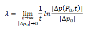
Where:
- λ is the Lyapunov exponent
- p is a point (x,y)
- t is time and can also be thought of as changing over the iterations
This calculation is not trivial and applying it in this case is beyond my math skills. Fortunately there are approximations. The one I've used comes from Sprott's book “Strange Attractors: Creating Patterns in Chaos” which is available on his web site.
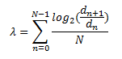
Where:
- d is the distance between two points. For example for two dimensions:
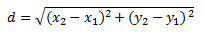
- n is a particular iteration
- N is the total number of iterations
Start with two points p10 and p20 for n = 0 with a distance d0 around 10-6. Calculate the points for the next iteration n=1 and the distance d1. Store the first estimated Lyapunov exponent calculated by log2(d1/d0).
In order to get to the next point you need to keep the distance between the points around the same as d0. So for the next iteration use p11 and set p21 to p11 + d0. Calculate p12, and p22 and the next Lyapunov exponent as log2(d2/d1). Continue this process for future iterations and average the values. However before starting this Lyapunov estimate, perform about a thousand or so iterations for the attractor to stabilize.
Coloring
I've been using mostly 3 dimensional attractors and the 3rd or z-dimension to determine the color. In order to do so you need to get an idea of the range of values that occur in the z-dimension for the attractor. Typically you iterate through about a thousand points before you start calculating the Lyapunov exponent. In that case for example, you can store the minimum and maximum values that occur for the z-coordinate between iterations 500 and 1000. Assuming the rest of points will fall within that range, which they usually do, you then map the z-value to the color palette. Those first thousand points are discarded, and starting with iteration 1001 you start plotting the points in the image. The specific iteration that you start to plot is not important but you want to get an idea of the range of z-values before you can determine the color. The (x, y) values for each iteration are mapped to pixel positions in the image and the z-coordinate value is mapped to the palette using the following equation.
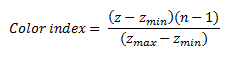
Where:
- zmin is the minimum expected z value
- zmax is the maximum expected z value
- z is the z coordinate of the current iteration and should be confirmed to be between zmin and zmax
- n is the number of colors in the palette
One minor problem with this approach is you're dealing with drawing a 3-dimensional object on a 2-dimensional plane and sometimes the same (x, y) position will occur within the attractor at multiple z values. This will result in a speckled appearance in a region where the colors should be continuous or the three dimensional object will be incorrectly represented. A way around this is to start with a blank image with all pixels colored with the zero color index, and when you process an iteration check the color index at the (x, y) coordinate and only color it if the new color index is higher than the current one. This way only the highest z-values are displayed. In the pair of images below, the image on the left was generated by coloring pixels with the last z value that occurred at the position, while the image on the right was generated by the later method of only coloring pixels if the new index was higher than the last.
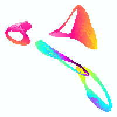
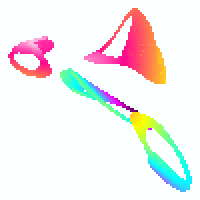
Another coloring algorithm ignores the z index and just counts the number of times a pixel was hit during the image calculation. That is for every iteration that produces a point at the same (x, y) coordinate the count at the position is increased by one. Then the number of times the pixel was hit is mapped to the color palette. This method can also be used to color two dimensional attractors. The image below demonstrates this method.
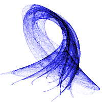
There are other methods that can be used for coloring. For example when a specific (x, y) point is hit at different z values you can average the colors to show the overlap. Another example mentioned in Sprott's book that is useful for even 2 dimensional attractors involves creating a shadow behind the attractor in the image.
One other approach to consider is image processing. For example, I've found that many times the final image has a few uncolored pixels within it that kind of ruin the aesthetic quality. If you could calculate the attractor for an infinite number of iterations, or at least a very large number, these holes will fill in, but that would require more time than you may be willing to sacrifice. In that case you can try to use a filter to smooth the image or fill the holes. You can do this in your own software or use an image processing application like GIMP or Adobe Photoshop. Of course image processing can also be use to produce all kinds of other effects if you're artistically inclined.
My goal here was just to give a quick idea of how these images are created. If you're interested in Chaos and Strange attractors, especially the mathematical aspects, I'd suggest searching the web for more information. The best place to start is Julian Sprott's web site and in particular his book “Strange Attractors: Creating Patterns in Chaos”. In that book he provides a much more detailed and accurate description of how to create strange attractors and in addition also provides a clear description of chaos. His book also includes the source code for BASIC programs for producing strange attractors.